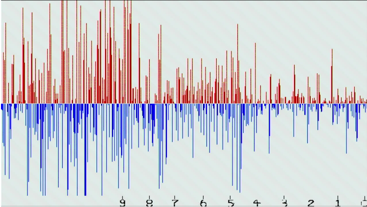
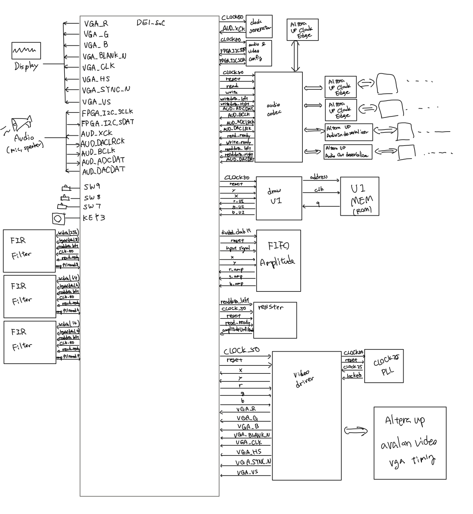
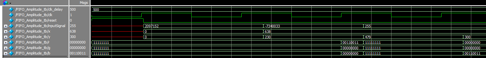
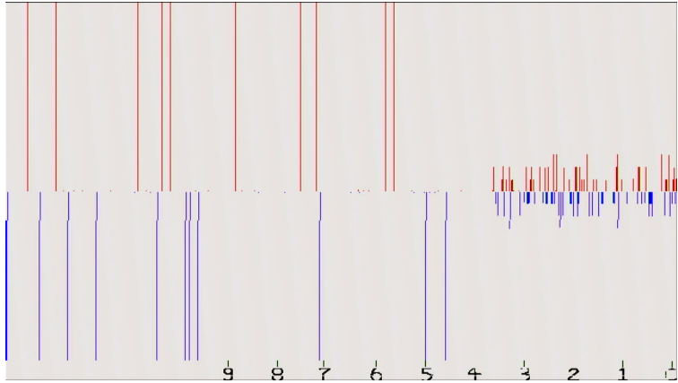

Digital Design · UW EE/CSE 371 Final Project
FPGA Audio Visualizer
Overview
Open-ended final project: a real-time audio amplitude visualizer written in SystemVerilog for the DE1-SoC. Microphone audio enters through the on-board audio codec, passes through a selectable averaging FIR filter, and scrolls across a VGA display as a ten-second amplitude history. Switching filter sizes while audio plays makes the effect of filter length directly visible.

Architecture
- Audio path: codec samples are read on the ready handshake and fed to parallel averaging FIR filters ranging from size 16 to 256; board switches select which output, or the unfiltered signal, is displayed
- Downsampling: a clock divider reduces the sample stream to a rate the eye can follow, so 640 stored samples span roughly ten seconds
- FIFO amplitude module: holds the last 640 samples, one per VGA column. For each pixel the video driver requests, it uses x to pick the sample and compares y against the sample magnitude, returning red above the midline for positive samples, blue below it for negative samples, and white elsewhere
- UI overlay: a ROM stores the pixel map for the time scale along the bottom edge, and a draw module merges it with the waveform colors
- Video: VGA driver on a PLL-generated 25 MHz pixel clock

My Contribution
- Built the ROM-driven UI overlay and its draw module
- Implemented user input handling for filter selection and the on-chip memory usage the project required
- Found and fixed a reset bug: the UI was originally drawn once at startup, so a manual reset left it blank. Because it is hard to know when the VGA port becomes active, the fix redraws the static UI continuously instead of relying on a one-time initialization
Verification
New modules were verified with ModelSim testbenches before hardware testing on a remote DE1-SoC board. The FIFO amplitude testbench covers the three display cases: a positive sample producing red, a negative sample where the pixel lies beyond its magnitude producing no color, and a negative sample producing blue.


Build Summary and Limitations
| Item | Value |
|---|---|
| Device | Cyclone V 5CSEMA5F31C6 |
| Toolchain | Quartus Prime 17.0 Lite |
| Registers | 37,939 |
| Block memory bits | 28,672 |
| PLLs | 2 |
- An estimated 23,000 of the registers hold the 640-sample history and the filter delay lines at 24 bits per sample; moving them into block RAM is the clear next optimization
- Amplitude is shown in raw sample units and is not calibrated to a dB scale
- The display shows time-domain amplitude only; a frequency-domain view would need an FFT stage